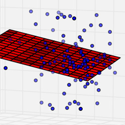
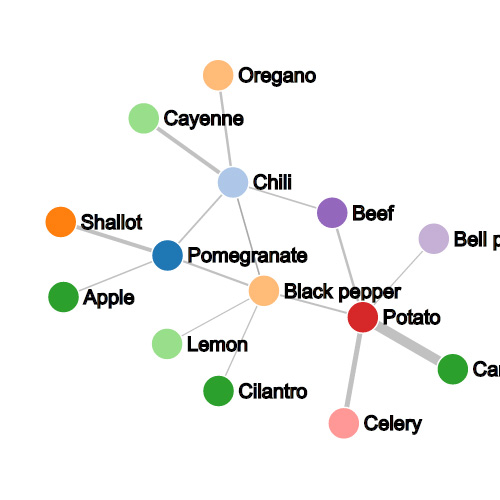
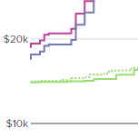

My background is in physics and computational mathematics, and I have undergrad research experience in astrophysics and applied physics
I've done regression analysis for Kickfurther to help them predict the success of potential offers that go through their site

A simple static site specifically designed for a food truck company that owns two trucks
A portfolio site for French photographer and videographer Arnaud Fournier
FoodHelix aggregates recipes and finds common links between ingredients to help chefs find flavor pairings
I built Kickfurther's data visualization backend to help their users gauge profitability of investment offers
 